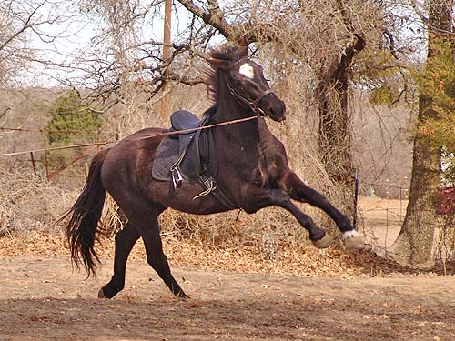

Miaren is three this
year I made it out to the parents'
place to get on
Niles and Miaren for the
first time. Miaren
really impressed me. He'd
picked up ground driving
from our last very pitiful
attempts, was light and happy
to give a little canter
on the lunge, and had no problem
with my swinging up into
the saddle.
.
Saddling isn't a big
deal for Miaren. I was surprised that the girth I brought was almost too
small. It fit Niles better than Miaren.
Mo, Niles and Emma watching.
I don't mind the stretching
down as long as he keeps moving.
He's about 15.3 and
I wouldn't mind if he stopped at 16. I think that's a good height.
Trotting on a bit exuberantly.
Relaxing into it.
A bit of a canter one
direction.
And the other way.
Not sure why he's so
far under himself behind, but nice of him to show his ability.

An ability I'd rather
not see. He'd been pulling in that corner, so I switched off the halter
to the bit. This time around he hit the bit and wanted to show his displeasure.
No bucking, just a bit of flinging about.
Ground driving around
the yard.
After a while we started
getting straight and forward.
Going around the tree.
Last year my vet bet me he'd turn grey. So far, so good.
Asking for a bit more
bending and trying to use the outside rein to control where we go (not
over to talk to the parents who were sitting in chairs watching the show).
It was a very windy
day and he never spooked. He's such a confident horse. Of course we were
at home. We'll have to see how it goes when we take him out on the trail.
The second time we whoaed
he already knew what it meant and stopped without bit pressure. I could
drop the lines and walk up to him while he stood still and waited. So nice
for a youngster not yet three.
Showing him weight and
flinging myself off a few times to see if I could startle him. Well, no.
I wonder how much longer
I'll be able to touch my knee to my chest. I was looking around for a mounting
block for him. With Niles, at 14.1, it was no problem.
He was so unconcerned
about what I was doing to him.
My confidence level
with Miaren is increasing. He might be pushy, but he hasn't been flighty
or mean about anything we've tried.
Playing with the lead
and asking for attention. He's one who will need a job to keep him out
of trouble.